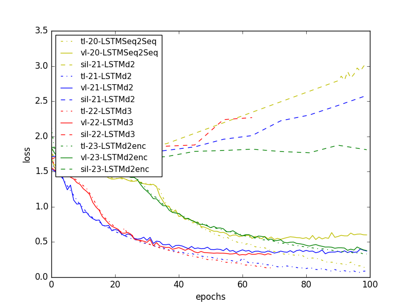
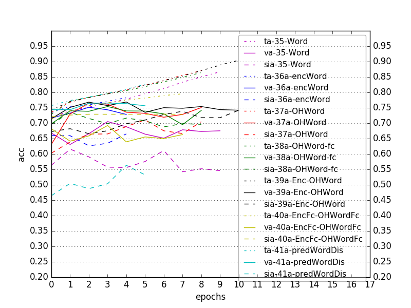
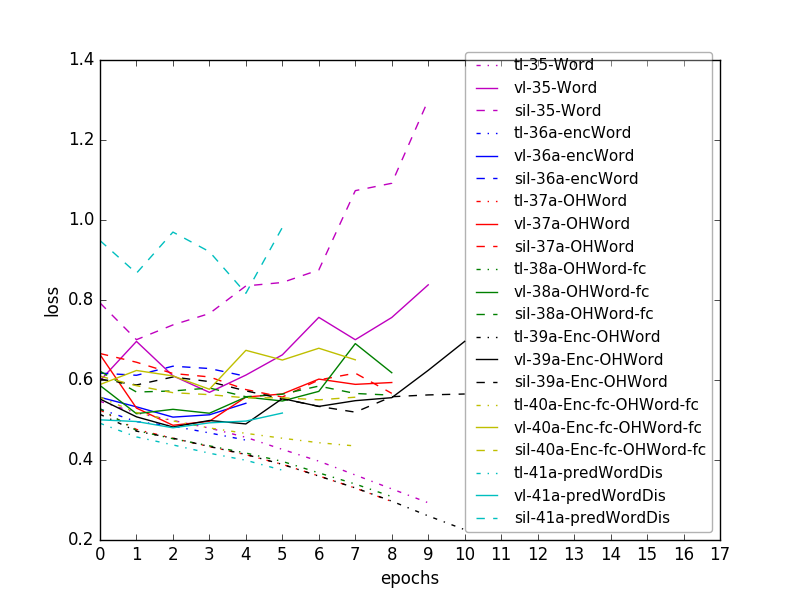

Realized output having padding gives awesome accuracies but does not reflect actual word-classification accuracy
Accuracies in paper: LIPREADING WITH LONG SHORT-TERM MEMORY:
Using LipReader "LSTM-h256-depth2-LSTMactivtanh-enc64-encodedActivsigmoid-Adam-1e-03-GRIDcorpus-s0107-s0909-tMouth-vMouth-NOmeanSub-epoch099-tl0.3307-ta0.8417-vl0.3782-va0.8304.hdf5"
Figure 1a. Comparison of accuracies of LSTMSeq2Seq, LSTMd2, LSTMd3, LSTMd2enc (with padding in output)

Figure 1b. Comparison of losses of LSTMSeq2Seq, LSTMd2, LSTMd3, LSTMd2enc (with padding in output)

Figure 2a. Comparison of training, validation and speaker-independent accuracies for different architectures

Figure 2b. Comparison of training, validation and speaker-independent losses for different architectures